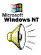

| | PRODUCTS | SEARCH | SUPPORT | SHOP | WRITE US | | ||
|
|
Top story Business Developer Home |
What's your opinion? Visit the Personal Information center to order free e-mail newsletters on Microsoft products and services. Download the trial version of the Rise of Rome Expansion Pack,an add-on to the popular Age of Empires strategy game. more download Subscribe to Our Free E-Mail Newsletters! for text-only version of homepage click here |
|
|
News this week | |
|
Products Product Catalog Free Downloads BackOffice Windows Office Services Technical support Events & Seminars Training & Certification Referrals to 3rd Parties Free Newsletters Business Solutions IT professionalsExecs Industries Small Business Key initiatives Development Resources Partner Resources Home Users Microsoft In Education About Microsoft |
 Windows NT 5.0 Family Name is Changing The Windows NT 5.0 product line will be called Windows 2000, reflecting its shift into the mainstream market. The line will launch with four products. |
|
| Top News For Today | ||
|
Microsoft Announces Smart Cards For Windows Microsoft announced a standards-based platform to deliver the benefits of the Windows platform to smart cards. Now issuers and designers of smart cards will be able to enjoy a broader range of smart card uses and applications. Ballmer at N+I: Making the PC enterprise Ready Changes in the Works Read About the Microsoft Trial Updated Wednesday, October 28, 1998 - 4:06 PM PDT 1998 Microsoft Corporation. All rights reserved. Terms of Use Privacy Policy |
||